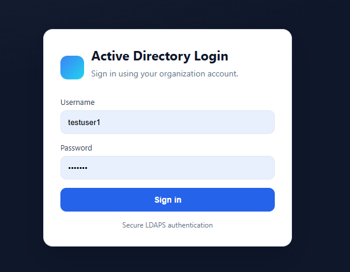
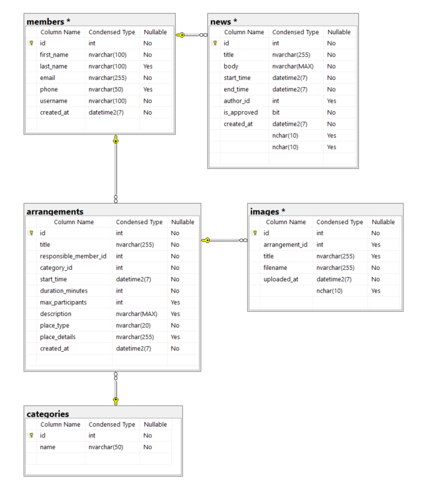
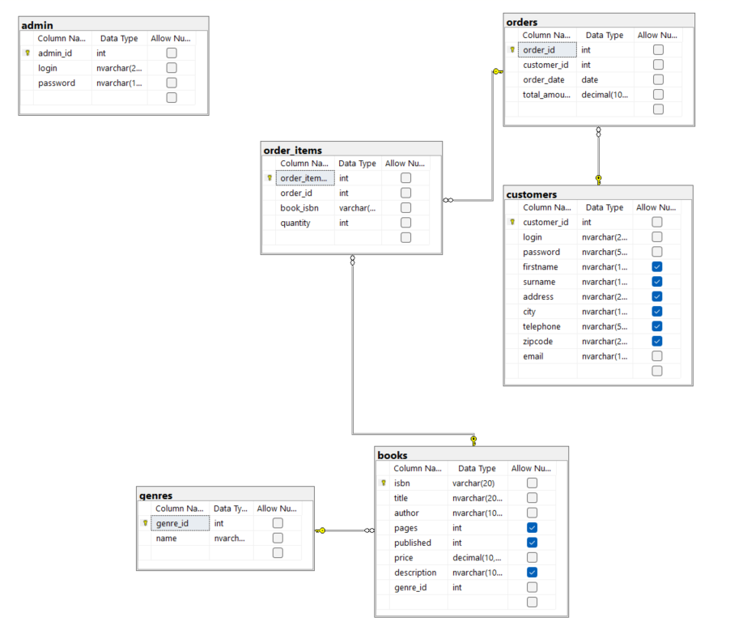
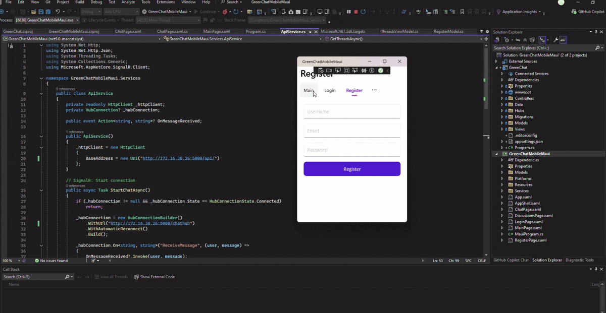

Frontend
Bootstrap
CSS
Fetch API
HTML
JavaScript
JSON
XAML
Full-Stack Developer Portfolio
Data Technician student specialized in Programming at Syddansk Erhvervsskole, currently building across frontend, backend, SQL systems, and application architecture.
Featured Project

Tech: HTML, CSS, JavaScript, PHP, Fetch API, JSON, Bootstrap
A responsive dog image gallery that integrates Dog CEO API with breed and sub-breed filtering, modal preview, and graceful fallback handling.
Tech: HTML, CSS, JavaScript, PHP, Fetch API, JSON, Bootstrap
A responsive dog image gallery that integrates Dog CEO API with breed and sub-breed filtering, modal preview, and graceful fallback handling.

Tech: PHP, LDAP, LDAPS, Active Directory, Windows Server, XAMPP, Sessions
A secure PHP authentication app that validates users against Microsoft Active Directory over LDAPS with session control and audit logging.

Tech: Microsoft SQL Server, T-SQL, ER Modeling, SSMS
A relational SQL Server database for kayak club operations with realistic sample data, referential integrity, and practical reporting queries.

Tech: Oracle SQL, SQL Developer, PL/SQL Triggers, Views, Data Modeler
An Oracle-based lending system with normalized schema, operational views, trigger-driven business rules, and overdue reminder simulation.

Tech: PHP, MySQL, MariaDB, Bootstrap 5, HTML, Sessions, mysqli
A lightweight PHP and MySQL customer-order dashboard with authentication, normalized data model, and view-based reporting.

Tech: Microsoft SQL Server, T-SQL, Relational Modeling, SSMS
A production-style bookstore relational database with idempotent SQL scripts, integrity constraints, and end-to-end CRUD task validation.

Tech: .NET MAUI, C#, XAML, SignalR, HTTP APIs
A cross-platform .NET MAUI chat app concept featuring real-time messaging, authentication flow, and discussion threads.